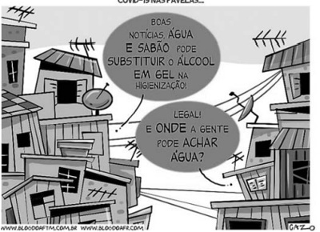

Em relação à Promoção da Saúde, assinale a alternativa CORRETA:
Partindo do pressuposto de que a saúde tem como fatores determinantes e condicionantes, entre outros, a alimentação, a moradia, o saneamento básico, o meio ambiente, o trabalho, a renda, a educação, o transporte, o lazer e o acesso aos bens e serviços essenciais, é correto afirmar que os níveis de saúde da população expressam
O cenário do enfrentamento ao coronavírus começou a se modi car após o início do Plano Nacional de Operacionalização da Vacinação contra a Covid-19. Apesar da resistência de uma parcela considerável da sociedade brasileira, a imunização em massa assumiu seu protagonismo num caminho oposto ao da Cloroquina. Inicialmente, a droga foi aprovada para uso no tratamento da Covid em caráter emergencial. Após cerca de 3 meses, o FDA (sigla em inglês da agência reguladora de medicamentos e alimentos dos Estados Unidos) revogou a autorização, devido aos potenciais riscos do fármaco e à falta de estudos cientí cos consolidados que justi cassem o seu uso rotineiro. No Brasil, a promoção do uso da Cloroquina e da Hidroxicloroquina trouxe diversas consequências. O Conselho Federal de Medicina (CFM), por exemplo, não se posicionou contra a prescrição do remédio para o tratamento da Covid e explicou que esse posicionamento seria contrário a um dos princípios básicos da medicina, contemplado no Código de Ética Médica. Com relação ao texto, é correto a rmar que a vacinação e as advertências contrárias ao uso indiscriminado da Cloroquina constituem, dentro da história natural das doenças, medidas de prevenção a nível
Revisar: possível letra faltando em enunciado
Em relação com os níveis de prevenção, é essencial uma vez que o diagnóstico precoce é fundamental para o êxito de tratamentos de várias doenças, muitas delas, fatais, tem como foco detectar um problema de saúde em estágio inicial, reduzindo ou prevenindo sua disseminação e efeitos a longo prazo. Estamos falando de:
Com a pandemia de COVID foi muito frequente o uso de equipamentos de proteção individual EPIs pelos funcionários da saúde, representando uma medida preventiva:
As vacinas são parte da prevenção.
Uma mulher com 30 anos de idade assiste ao consultório diz querer realizar uma bateria completa de exames, teste ergométrico, ultrassonogra a total de abdome e tomogra a de crânio. Exame físico nada a sinalizar o médico explica que muitos exames pedidos desnecessariamente, poderão acarretar mais prejuízos que benefícios, como: falsos positivos, achados casuais, situações limítrofes, desvios do raciocínio clínico, sobrediagnósticos. A abordagem feita em relação a prevenção seria:
Relacione os níveis de prevenção para desordens relativas ao uso de substâncias como o álcool, opioides e cocaína, apresentados no bloco superior, às suas possíveis características, apresentadas no bloco inferior: (1) Prevenção Primordial (2) Prevenção Primária (3) Prevenção Secundária (4) Prevenção Terciária (5) Prevenção Quaternária ( ) é designada para prevenir o uso de substâncias, tornando, dessa forma, o abuso impossível. ( ) é designada principalmente para os jovens. ( ) consiste em programas de diagnóstico precoce, a m de identi car abuso e redirecionar o comportamento dos pacientes. ( ) seu foco é o tratamento da adição, a fim de evitar complicações decorrentes do uso compulsivo. A sequência correta de preenchimento dos parênteses, de cima para baixo, é:
Os diversos estudos sobre os Determinantes Sociais da Saúde (DSS) e as iniquidades em saúde permitiram a construção de modelos que procuram esquematizar a trama de relações entre os vários níveis de determinantes sociais e a situação de saúde. Entre esses modelos, a CNDSS (Comissão Nacional de Determinantes Sociais da Saúde) resolveu adotar o que inclui os DSS dispostos em diferentes camadas, segundo seu nível de abrangência, desde uma camada mais próxima aos determinantes individuais até uma camada distal onde se situam os macrodeterminantes Esse é o modelo de
Sobre Prevenção Quaternária, é correto afirmar:
Luana é diabética há 3 anos. Toma medicações que tem controlado parcialmente a doença. Na última consulta na Unidade de Saúde próxima de sua casa, o enfermeiro reorientou sua dieta e pediu apoio do nutricionista do NASF. Esta ação desempenhada pelo enfermeiro caracteriza qual nível de prevenção?
Leve em consideração a prescrição de reabilitação cardiorrespiratória em um paciente que sofreu infarto agudo do miocárdio. Em qual nível de prevenção essa prescrição se situa?
Existem várias definições do que sejam os determinantes sociais de saúde (DSS) e todas trazem a ideia de que "as condições de vida e trabalho dos indivíduos e de grupos da população estão relacionadas com sua situação de saúde". O modelo de Dahlgren e Whitehead dispõe os DSS em camadas superpostas. Constitui camada do modelo:
Em um município de 5.000 habitantes, existe somente uma unidade de saúde da família com duas equipes. Devido à falta de disponibilização de outros serviços na comunidade, a unidade básica de saúde (UBS) realiza todo o tipo de atendimento: desde consultas programáticas até às de urgência e de emergência. Por conta disso, o horário de funcionamento da UBS ca estendido e as duas médicas da unidade, Maria e Kelly, se revezam nos horários de atendimento, de modo que que pelo menos um médico durante todo o período de funcionamento da unidade. Com um novo aumento de casos de síndrome respiratória, o atendimento triplicou na unidade e, para corroborar, Maria foi afastada por covid-19, cando Kelly sozinha por uma semana para realizar todos os atendimentos prioritários. No nal da quinta-feira daquela semana, o paciente Jorge chega para sua consulta agendada devido a uma dor no pé que já dura 3 meses. Ele aguardava a consulta há 2 meses, que sempre era remarcada devido aos casos graves que chegavam na unidade e que precisavam ser atendidos com maior prioridade e transferidos de unidade. Ao chegar ao balcão, a recepcionista informa a Jorge que a consulta terá que ser novamente remarcada, visto que a Dr.a Kelly ainda irá realizar o atendimento de 5 pacientes com sintomas gripais e que, portanto, não conseguirá atendê-lo. Ele, chateado e com dor, fala que não sairá da unidade até conversar com a médica, visto que já será a quarta vez que sua consulta será remarcada. Dr.a Kelly estava no corredor e ouviu Jorge argumentar. Ela vai em direção dele e pergunta se ele não se importa com as pessoas com covid-19. Diz que, se ele esperou 3 meses, pode esperar mais 1 dia, que não vai morrer pela dor. Jorge, constrangido, pede desculpas e sai da unidade. Considerando que, nessa situação hipotética, a atitude de Kelly com o paciente pode ser derivada de sua sobrecarga de trabalho, assinale a alternativa que apresenta em que nível de prevenção se enquadrariam as ações de saúde para evitar burnout
Revisar: possível letra faltando em enunciado
Para que as intervenções sobre os determinantes sociais da saúde (modelo de viáveis, efetivas e sustentáveis, elas devem fundamentar-se em três pilares básicos. Pode-se afirmar que esses pilares são:
Pode-se afirmar, com relação aos Determinantes Sociais da Saúde, que:
Os serviços e os pro ssionais de saúde vêm sendo cada vez mais pressionados pelo complexo médico-industrial (indústrias de medicamentos, exames, órteses e próteses), onde o conhecimento cientí co é transferido do cuidado centrado na pessoa para avaliação e gestão de riscos. Praticamente todos os seres humanos, na maioria das vezes, são taxados de doentes quando procuram atendimento médico. Um dos principais argumentos daqueles que propagam práticas de medicalização da vida é a importância crescente atribuída ao risco, e a confusão que se faz entre risco e doença no dia a dia da prática médica. Baseado nestas a rmações, responda: Qual o nível de prevenção que está em jogo nesta constatação?
Revisar: possível letra faltando em enunciado
Em relação à infecção por Covid-19, a não utilização do denominado “Kit Covid”, uma associação de cloroquina e outras drogas, é um exemplo de
Uma paciente de 84 anos de idade, hipertensa e diabética, sofreu acidente cerebrovascular isquêmico, apresentando hemiparesia há 2 anos e deambulando com apoio de muleta. Nesse caso hipotético, a tentativa de retirada de uso frequente de Vertix corresponde ao(s) seguinte(s) nível(is) de prevenção:
Qual o tipo de prevenção realizada e o nível de atenção à saúde nos cenários a seguir: I. Criança com transtorno global do desenvolvimento participando de grupo no Centro de Apoio Psicossocial Infanto Juvenil (CAPS-IJ), para integração comunitária. II. Pessoa que teve relação sexual sem preservativo recebendo Pro laxia Pós-Exposição (PEP) para HIV em uma Unidade de Pronto-Atendimento (UPA). III. Clínico geral, que acompanha o paciente em consultório particular, orientando que não há necessidade de solicitar exame de vitamina D para o
Disponível em: <https://blogdoaftm.com.br/charge-covid-19-nas-favelas/>. Acesso em: 24 out. 2022. A história natural da doença refere-se a uma descrição da progressão ininterrupta de uma doença em um indivíduo, desde o momento da exposição aos agentes causais até a recuperação ou a morte. Considerando a imagem apresentada e os níveis de prevenção descritos por Leavell e Clark, assinale a alternativa que indica o nível de prevenção ao qual a charge se refere.

Por ser mais abrangente, o conceito de vulnerabilidade atualmente é mais aceito do que o conceito de suscetibilidade. As dimensões da vulnerabilidade são:
Joana procurou o serviço de saúde mais próximo de sua casa, para receber pro laxia pós-exposição (PEP), pois tivera uma relação sexual desprotegida que considerava de risco. Ao apresentar sua queixa ao pro ssional de saúde, ele respondeu que ela procurou o serviço errado, pois, além dos medicamentos não estarem disponíveis ali, não seria conveniente que esse tipo de queixa fosse tratado em uma unidade de saúde frequentada por famílias. Ele terminou o atendimento repreendendo Joana, dizendo-lhe que ela deveria saber melhor com quem se relacionava. A situação hipotética acima retrata as vulnerabilidades
Mafalda, de 63 anos de idade, natural e procedente de João Pessoa – PB, viúva, costureira aposentada, católica, compareceu à consulta com o médico de família e comunidade, que fez os seguintes registros. S1) Trazer exames de rotina de HAS e DM. S2) Cefaleia frontal pulsátil há cerca de dez dias, quase todos os dias, sem fonofobia ou fotofobia, náuseas ou outros fatores associados. Intensidade 4/10, que alivia com dipirona 500 mg. Pede tomogra a computadorizada de crânio para “saber o que tem”. S3) Di culdades para dormir há cerca de duas semanas, desde a que lha se casou e saiu da casa dos pais. Está morando sozinha. Pede “calmante” (sic). Vizinha “emprestou” rivotril; gostaria de continuar tomando. O) Exame físico: NDN. HbA1C 8,3 / restante sp. A) DM II fora da meta. cefaleia tensional. insônia – transtorno de ajustamento. P) Aumento antidiabético oral + oriento MEV Faço escuta ativa, estimulo insight sobre momento de vida. Ensino e entrego cartilha sobre higiene do sono. Tranquilizo sobre cefaleia (observação vigilante). Oriento sobre vacinas contra covid-19. Nesse caso hipotético, consta(m) no plano somente o(s) nível(is) de prevenção:
Paciente feminina, de 52 anos, casada e mãe de 2 lhas, trabalhadora em uma fábrica de calçados, veio à consulta de rotina. Sem queixas, referiu realizar pouca atividade física e negou tabagismo. Em sua história familiar, constavam cardiopatia isquêmica (pai falecido aos 65 anos por infarto agudo do miocárdio) e neoplasia de pulmão (mãe falecida aos 49 anos). Relatou sentir medo de ter câncer, razão pela qual gostaria de submeter-se a exames pulmonares. O exame físico foi normal, com aferição da pressão arterial (130/76 mmHg), e foi realizada coleta de material para Papanicolaou. Exames complementares (glicemia, per l lipídico, mamogra a) foram solicitados. Recebeu orientações sobre a prática de atividade física e sobre a não necessidade de realizar tomogra a de tórax (TC), por não haver evidências para tal indicação. Com base no quadro, associe os níveis de prevenção (coluna da esquerda) às condutas apresentadas (coluna da direita). 1 - Primordial 2 - Primária 3 - Secundária 4 - Terciária 5 - Quaternária ( ) Aferir a pressão arterial. ( ) Solicitar a mamografia. ( ) Não solicitar a TC de tórax. A sequência numérica correta, de cima para baixo, da coluna da direita, é
Em 1992, Dahlgren e Whitehead sistematizaram o conjunto de determinações do processo saúde/doença ou saúde/adoecimento a partir do paradigma da promoção da saúde e, no caso brasileiro, associada à perspectiva da mudança social e da redução das iniquidades. Considerando o caso de AJM, gênero masculino, ajudante de pedreiro, 65 anos de idade, recentemente diagnosticado com Hipertensão Arterial Sistêmica – HAS, dentro da perspectiva dos determinantes sociais do processo saúde/doença e de acordo com as estratégias do Sistema Único de Saúde – SUS para o cuidado da pessoa com doença crônica, é correto afirmar que
Na clássica definição de níveis de prevenção de Leavell & Clark, os procedimentos realizados tão logo o processo da doença seja detectável, no início da patogênese, correspondem à prevenção
“A tentativa mais conhecida e abrangente de construir um modelo de organização da intervenção humana sobre o processo saúde-doença foi feita por Leavell e Clark (1976), ...” Segundo esse modelo, avalie as asserções a seguir e a relação causal proposta entre elas. I. – O atendimento aos pacientes portadores de sequelas respiratórias provocadas pela COVID-19 é considerado uma ação de prevenção quaternária. PORQUE II. – Leavell e Clark colocam a reabilitação como um nível mais tardio de prevenção dentro do período de patogênese. Acerca dessas asserções, assinale a opção correta.
Considere o texto abaixo e, em seguida, responda à questão: “As linhas da prevenção quinquenária foram apresentadas em associação com o mote “prevenindo o dano no paciente, atuando no médico”, introduzindo um novo nível de medidas preventivas que [...] visa à melhoria da qualidade dos cuidados e da saúde nos pacientes, porém com foco no cuidador, de onde, efetivamente, emergem todos os cuidados.” - Santos JA. Resgate das relações abusivas em que nos encontramos: uma https://doi.org/10.5712/rbmfc14(41)1847. Sobre a Prevenção Quinquenária, assinale a alternativa verdadeira.
Edvaldo é médico de família e comunidade na unidade básica de saúde de São João de Deus. Ele atendeu Judith, que retornou para consulta médica após a realização de um exame de colpocitologia oncótica. — Dona Judith, pode car tranquila. Está tudo bem com a senhora, o resultado está normal. Como a senhora já tem dois preventivos consecutivos sem alterações, o próximo deve ser feito só daqui a 3 anos. Como a data está longe, recomendo que a senhora anote em algum lugar para não esquecer! — Ah, doutor Edvaldo, eu não esqueço não. Pode deixar que, daqui a 3 anos, eu repito esse exame! Eu me cuido direitinho que é para não deixar a doença chegar! Afinal, é sempre melhor prevenir do que remediar! Sobre o resultado negativo da paciente na colpocitologia oncótica, podemos afirmar que:
Qual é a definição que mais bem se encaixa no conceito de prevenção quaternária?
Na APS, o médico de família lida com diversos níveis de prevenção da saúde. Um exemplo de intervenção médica INCOMPATÍVEL com a prevenção quaternária é o(a):
Imunizações, realização de citopatológico de colo uterino, reabilitação de um paciente com sequelas de AVC e evitar realizar procedimentos invasivos desnecessários são, respectivamente, exemplos de níveis de prevenção:
A saúde tem “como determinantes e condicionantes, entre outros, a alimentação, a moradia, o saneamento básico, o meio ambiente, o trabalho, a renda, a educação, a atividade física, o transporte, o lazer e o acesso aos bens e serviços essenciais”, como refere o texto da
Em 1920, Winslow, antigo professor de saúde pública da Universidade de Yale, apresentou a seguinte definição de saúde pública: Saúde Pública é a ciência e a arte de evitar doenças, prolongar a vida e desenvolver a saúde física, mental e a e ciência, através de esforços organizados da comunidade para o saneamento do meio ambiente, o controle de infecções na comunidade, a organização de serviços médicos e paramédicos para o diagnóstico precoce e o tratamento preventivo de doenças e o aperfeiçoamento da máquina social que irá assegurar a cada indivíduo, dentro da comunidade, um padrão de vida adequado à manutenção da saúde. É correto afirmar, com base nesse texto, que
As Iatrogenias, cuja redução é prevenção quaternária, estão relacionadas
A política de redução do uso de combustíveis fósseis que tem por objetivo a preservação da qualidade do ar é uma medida de prevenção
Mulher, 52 anos de idade, faz acompanhamento regular com pro ssionais da Unidade Básica de Saúde devido a quadro de hipotireoidismo. Comparece a consulta de rotina, sem queixas. Função tireoideana bem controlada com uso de levotiroxina 75 mcg/dia. Não tem outras comorbidades, foi tabagista dos 15 aos 30 anos de idade, fumava 1 maço de cigarros por dia. Faz exame citopatológico de colo de útero regularmente, o último há um ano. Os 3 exames citopatológicos anteriores eram normais. Tem três lhos saudáveis e tem como história familiar ambos os pais hipertensos, uma irmã diabética e uma tia que teve câncer de mama aos 68 anos de idade. Segundo o modelo de história natural da doença e promoção à saúde de Leavell & Clark (1965), as medidas adotadas na questão anterior para a paciente se enquadram em qual nível de prevenção?
Qual das situações abaixo melhor representa a aplicação do conceito de prevenção quaternária?
O termo prevenção quaternária (P4) foi utilizado pela primeira vez em uma conferência da Organização Mundial de Médicos de Família (WONCA), em 1995, por Marc Jamoulle. Após quatro anos, essa definição foi adotada e publicada, no dicionário WONCA, da seguinte forma: “ação feita para identi car uma pessoa ou população em risco de supermedicalização, para protegê-los de uma intervenção médica invasiva e sugerir procedimentos cientí ca e eticamente aceitáveis”. Comumente, utiliza-se o diagrama cartesiano que contrapõe o ponto de vista médico com o ponto de vista do paciente, ou seja, as dicotomias entre a existência ou não de doença e a presença ou não de sintomas desagradáveis (disease versus illness), obtendo-se, assim, quatro quadrantes, como mostra a figura abaixo. O quadrante que representa as situações com maior risco de excessos e problemas advindos de intervenções médicas, ou seja, quando a prevenção quaternária se faz mais importante, é o quadrante
Revisar: possível letra faltando em enunciado
Constitui exemplo em que pode ser empregada a Prevenção Quaternária pelo médico:
Ação feita para identi car um paciente ou população em risco de supermedicalização, protegendo-os de uma intervenção médica invasiva e sugerir procedimentos cientí ca e eticamente aceitáveis. Um lema deste tipo de prevenção e não causar dano”. Está se falando da
Revisar: possível letra faltando em enunciado
Mulher, 50a, faz acompanhamento na Unidade Básica de Saúde em razão de hipertensão arterial, obesidade, tabagismo, nervosismo. Faz uso de clonazepam, losartana, atenolol e uso irregular de uoxetina. Procura a UBS com frequência para pedir troca de receitas e tem aumentado o uso de clonazepan por conta própria. CONSIDERANDO A PREVENÇÃO QUATERNÁRIA, A CONDUTA É:
O conceito de prevenção quaternária foi proposto, a partir de 1999, pelo médico de família belga Marc Jamoulle, tomando como base a proposta de Leavell & Clark de níveis de prevenção. Qual das seguintes alternativas expressa uma medida de prevenção quaternária?
Elza é residente do primeiro ano de Clínica Médica e acompanha, durante seu estágio na enfermaria, a internação de Paulo, 56 anos. Ele é hipertenso grave de longa data e tem instalada uma insu ciência cardíaca, NYHA classe III. Ela se lembra de seu avô José que também é hipertenso, mas, ao contrário de Paulo, é bem controlado e sem comprometimento significativo da sua funcionalidade. Ela conclui que, com resultados tão diversos, muitas ações preventivas provavelmente deixaram de existir ao longo do cuidado de Paulo. Dentre essas ações, ela lembra do controle no consumo de sal, da atividade física regular, do diagnóstico e manejo precoce do quadro de hipertensão arterial e, por m, da otimização da terapia para controle da insu ciência cardíaca. Diante do caso, considerando a classificação de Leavell & Clark para a história natural da doença Insuficiência Cardíaca, assinale a alternativa correta.
Sobre a prevenção quaternária, assinale a alternativa correta.
Desde a implantação da Lei Orgânica da Saúde no Brasil, Lei n.º 8.080/1990, a Epidemiologia tem sido explicitamente utilizada como referencial para a fundamentação das ações de saúde no âmbito do Sistema Único de Saúde (SUS). É definida, tradicionalmente, como ciência que estuda a distribuição de doenças e suas causas nas populações. No século XX, além da ampliação dos seus conhecimentos, também foi consolidada como saber cientí co, subsidiando práticas de saúde pública e coletiva. De acordo com o artigo “Determinação ou Determinantes? Uma discussão com base na Teoria da Produção Social da Saúde”, Epidemiologia
Revisar: possível letra faltando em enunciado
O conceito de Determinação Social da Saúde teve notória importância na formação da epidemiologia social latino- americana e na história do movimento sanitário brasileiro. A medicina social tem sua origem vinculada à polícia médica na Alemanha, à medicina urbana na França e à medicina da força de trabalho na Inglaterra. E é a partir dos anos 40 do século XIX que se originam as condições para a emergência da medicina social. “Às vésperas de um movimento revolucionário que se estenderia por toda a Europa, muitos médicos, lósofos e pensadores assumiriam o caráter social da medicina e da doença”. A partir deste momento, se integra ao discurso sanitarista alguns princípios básicos, que são:
A ação tomada para remover causas e fatores de risco de um problema de saúde individual ou populacional, antes do desenvolvimento de uma condição clínica, pode ser definido como prevenção:
Considerando os níveis de prevenção, o ato de utilizar máscaras em cenários pandêmicos como o de COVID-19 é um exemplo de qual nível de prevenção?
Considere o caso clínico abaixo e os personagens nele ilustrados, para responder. Após ser aprovado e ingressar no Programa de Residência Médica em Medicina de Família e Comunidade, você é direcionado para uma Unidade de Atenção Primária à Saúde (UAPS) para ser recebido pelo médico preceptor da Unidade. Em sua primeira participação de reunião de equipe, uma das agentes comunitárias de saúde (ACS) da equipe do médico preceptor traz o relato de uma gestante de sua microárea que não procurou a Unidade de Saúde para começar o pré-natal. A gestante era Vanessa e ela era antiga conhecida da equipe, porque seu nado pai, Seu Odair, fora uma liderança comunitária e era muito querido por todos. Vanessa tinha a primeira consulta de pré-natal agendada para o primeiro horário depois da reunião de equipe. Dr. Marcos Júlio, seu preceptor, relata que Vanessa nunca teve boa relação com os pais e saiu de casa cedo, passando a morar, aos 14 anos, na casa de Ubiratan, seu primeiro parceiro. Após alguns anos morando juntos, Vanessa engravidou e chegou a ser acompanhada pela UAPS no pré-natal, mas teve perda gravídica com aproximadamente 12 semanas de seguimento. Durante esse acompanhamento pré-natal, a equipe cou ciente de que Vanessa vivia em contexto de violência doméstica, mas continuava vivendo com Ubiratan, porque não aceitava voltar para a casa dos pais. Por volta de seus 24 anos, Vanessa teve episódio de hemiplegia desproporcional em dimídio esquerdo, desvio de rima labial e disartria, enquanto trabalhava em uma casa como diarista. Foi levada à urgência e hospitalizada. Durante hospitalização, confirmou-se um infarto cerebral. A família de Vanessa possui histórico de AVCs em idades precoces: Vanusa apresentou episódio de AVC durante uma de suas gestações e dona Benzarina teria apresentado o primeiro AVC antes da menopausa. Segundo a Assistente Social do hospital em que Vanessa cou internada por quase dois meses, Ubiratan nunca teria realizado uma visita, mas Edberto, um ex-namorado, foi companhia assídua. Após a alta hospitalar, Vanessa descobriu que Ubiratan estava vivendo com outra mulher e se mudou para casa de Edberto, que a acolheu, a despeito da não-aceitação do pai de Edberto, Seu Eduardo. Depois de seis anos morando juntos, Vanessa engravidou novamente, mas não procurou a UAPS. A ACS fazia visitas domiciliares na mesma rua em que Edberto e Vanessa moram, quando viu Vanessa, já com barriga gravídica, varrendo a calçada. Após breve conversa, a ACS agenda atendimento para Vanessa na UAPS. (TRECHO DA QUESTÃO ANTERIOR) "Em sua consulta com Edberto, ele refere que o medo de desenvolver câncer de pulmão é uma das razões que o motiva a parar de fumar. Ele, então, pergunta se você pode solicitar algum exame de rastreio para câncer de pulmão nele. De acordo com recomendações nacionais para o rastreio do câncer de pulmão, assinale a alternativa com a conduta adequada." A abordagem adequada frente à demanda, ilustrada na questão anterior, de Edberto quanto a exames de rastreio de câncer de pulmão configura que nível de Prevenção?
Revisar: possível letra faltando em enunciado
Considere o texto abaixo para responder à questão. “As mulheres são atingidas pela viole familiares, envolvendo agressões físicas, sexuais e também danos psíquicos. [...] [...] Estudos nacionais e internacionais apontam entre os usuais fatores associados à violência por parceiro íntimo o consumo de substâncias psicoativas. [...] Adicionalmente relevante se torna o consumo de medicamentos, realizado especialmente por mulheres, e sua relação com os episódios de violência entre parceiros íntimos, o que pode ser considerado um novo desa o para os pro ssionais de saúde, [...] devido ao risco de corroborar para uma medicalização excessiva. Na América Latina, [...] o uso de álcool pelo parceiro íntimo se insere entre as demais características apresentadas pelas mulheres agredidas, a saber: coabitação com o parceiro sem casamento formal; muitos lhos; não compartilhamento da tomada de decisão; disparidade no nível de instrução. Assim, o consumo de álcool, especi camente, está incluído entre os riscos para a violência doméstica, principalmente se o padrão de consumo for elevado. [...].” SILVA, Valéria Nanci. “Viole Atenção Primária à Saúde de São Paulo / Valéria Nanci Silva. – São Paulo, 2008. O texto faz referência a que fenômeno observado na saúde pública?
“A prevenção vem sendo organizada de maneira cronológica desde meados do século XX. A mudança paradigmática de uma prevenção de base cronológica para uma de base paradigmática oferece uma nova compreensão do trabalho e, especi camente, das atividades preventivas dos médicos, e traz à luz o conceito de prevenção quaternária.” (GUSSO, JAMOULLE, 2012). Assinale a alternativa que contenha medidas relacionadas a realização da prevenção quaternária:
Uma primigesta em uma consulta de pré-natal recebe vacinação para prevenção do tétano, orientação quanto a alimentação mais adequada, recomendação quanto a parar de fumar, além da solicitação de exames sorológicos para HIV e Sí lis. A partir do modelo de Leavell & Clark aponte a alternativa onde existe correspondência entre a medida adotada e o nível de prevenção.
De acordo com o modelo de prevenção das doenças desenvolvido por Leavell e Clark, o programa de imunização do trabalhador é uma ação de:
De acordo com Leavell & Clark, os inquéritos epidemiológicos para a descoberta de novos casos de uma patologia na comunidade se enquadra no seguinte nível de prevenção:
O tratamento da hipertensão arterial nos seus estágios iniciais, caracteriza o(s) tipo(s) de prevenção:
Segundo a Organização Mundial da Saúde, são princípios gerais e pré-requisitos para a implementação de intervenções sobre os determinantes sociais da saúde, EXCETO:
Os Determinantes Sociais da Saúde − DSS são tratados, desde 2005, dentro de uma comissão própria da Organização Mundial da Saúde (OMS). Segundo ela existem dois tipos de DSS, sendo
Há várias definições para Determinantes Sociais de Saúde (DSS), que de maneira diversa evidenciam as relações entre as condições de vida e trabalho dos indivíduos e grupos da população estão relacionadas com sua situação de saúde. Com relação à definição a seguir, assinale a alternativa correta: “Fatores e mecanismos através dos quais as condições sociais afetam a saúde e que potencialmente podem ser alterados através de ações baseadas em informação.” KRIEGER N. A. Glossary for social epidemiology. J. Epidemiology Community Health, n. 55, p. 693-700, 2001.
“Uma nova compreensão de determinantes da saúde só poderá emergir, se houver um diálogo entre as ciências humanas e as ciências da vida. Este diálogo não poderia deixar de ser perturbador e incômodo, pois supõe que os pesquisadores de cada disciplina repensem os fundamentos de seus trabalhos, que aceitem trabalhar com outros métodos, que encarem horizontes temporais diferentes e, consequentemente, modi quem a maneira de conceber os fenômenos que estudam.” CONTANDRIOPOULOS (1998). A alternativa que se refere ao modelo explicativo do processo saúde e doença de determinação social da doença, é:
Sobre promoção da saúde e proteção específica, é correto afirmar:
Pratica-se prevenção secundária, na classificação em três níveis
Dona Francisca, 58 anos, do lar, está se sentindo bem, mas precisa renovar a receita de algumas medicações em uso. A médica de família e comunidade da unidade do bairro iniciou os atendimentos no município há pouco tempo, e ainda não conhece dona Francisca. Dona Francisca traz em sua mão a receita antiga das medicações que faz uso e entrega a médica; no papel estão prescritos: metformina, losartana, ácido acetilsalicílico (AAS) e sinvastatina. Como não conhece o histórico da paciente e por não haver registros médicos no prontuário por mais de dois anos, tempo em que a unidade cou sem atendimentos médicos, a médica opta por fazer questionamentos na anamnese com relação à história de doença cardiovascular estabelecida. A paciente nega história de evento cardiovascular anterior, como Acidente Vascular Cerebral ou Infarto. Mas menciona que o médico anterior passou estatina para melhorar as taxas do colesterol e AAS para “a nar” o sangue. A médica então decide realizar um per l lipídico dentre outros exames (Adaptado de Gusso, G; Lopes, J.M.C.; Dias, L.C. Tratado de Medicina de Família e Comunidade: princípios, formação e prática. 2 ed. Porto Alegre: Artmed, 2019. Capítulo 157, pág. 4011). Sobre essa situação, assinale a alternativa
Francisca, 25 anos, vem em consulta solicitando uma ultrassonogra a de tireoide. Diz que sua mãe, que está com 56 anos, teve câncer na tireoide. Nega queixas ou outras demandas. Nega problemas de saúde crônicos ou uso de medicamentos. Ao exame físico, a tireoide está eutrófica e sem nodulações palpáveis. A prevenção que deve ser aplicada neste caso é a:
O médico precisa realizar ações de prevenção no seu cotidiano de trabalho. Em relação as ações desenvolvidas é correto afirmar:
Considere as ações de saúde apresentadas nos itens a seguir. I Vacinação em massa para a proteção específica contra a covid-19. II Evitar uso inadvertido de medicações sem eficácia comprovada em casos leves de covid-19. III Seguimento em ambulatório específico para casos de síndrome pós-covid. IV Realização de RT-PCR para SARS-Cov-2 em pacientes com síndrome gripal, preferencialmente até o 10.º dia do início dos sintomas. V Estratégias de distanciamento social para achatar a curva de casos de covid-19, no que tange a evitar o contágio. VI Orientar pacientes recuperados de covid-19 a manter as medidas de isolamento social devido à possibilidade de reinfecção. A partir do modelo da história natural das doenças e dos níveis de prevenção, é correto a rmar que ações de prevenção terciária são apresentadas nos itens
São exemplos de prevenção secundária:
Os três níveis de prevenção definidos por Leavell & Clark, em 1965, delinearam o modelo da história natural das doenças. Foram eles:
Carlos, acadêmico de medicina, ouviu de seu colega André, também acadêmico de medicina, que “a atenção primária à saúde pode ser terciária dependendo do caso”. André justi cou sua a rmativa pelo fato de que ações de reabilitação podem ser executadas pelas equipes de saúde da família. A informação recebida por Carlos é:
Na década de 80 do século passado, desenvolveu-se um modelo de explicação e de intervenção do processo saúde- doença-cuidado, que enfatizou “o processo de capacitação da comunidade, para atuar na melhoria de sua qualidade de vida e saúde, incluindo uma maior participação no controle desse processo”. Qual o nome desse modelo?
Criança, 8 anos, com quadro de asma, pode ser apontado como determinante causal proximal da doença:
Determinação Social da SaúdeDeterminantes Sociais da Saúde DSS No âmbito das ciências sociais, raça, assim como outros marcadores sociais (gênero, classe social etc.), é uma construção histórica e cultural. A dimensão étnico-racial dos agravos à saúde tem gerado controvérsias entre pesquisadores. Nos últimos anos, na América Latina, especialmente no Brasil, tal temática vem ganhando fôlego com investigações e políticas sociais direcionadas à redução das desigualdades étnico-raciais e seus impactos na saúde. Nesse sentido, os fatores que norteiam as relações entre raça/etnia e saúde são:
Em 2012, um estudo britânico avaliou os efeitos de uma campanha massiva para informar e persuadir as pessoas a terem uma vida mais saudável. O estudo concluiu que reduções no comportamento de risco foram observadas principalmente entre aqueles grupos socioeconômicos e educacionais mais elevados. Entre as pessoas com menor quali cação profissional a prevalência de comportamentos de risco era cinco vezes maior do que entre aquelas com ensino superior. A PARTIR DOS RESULTADOS DESTA PESQUISA ASSINALE A ALTERNATIVA CORRETA:
A Prevenção Quaternária (P4) é um conjunto de ações que tem a nalidade de evitar danos ao paciente com riscos de supermedicalização ou intervenções desnecessárias de médicos ou de outros pro ssionais de saúde. Foi utilizada pela primeira vez em uma conferência da Organização Mundial de Médicos de Família (WONCA), em 1995, por Marc Jamoulle. Nesse sentido, é considerado exercício da P4:
Um médico de uma equipe de Saúde da Família, notando o aumento do número de casos de AIDS na área de cobertura de sua Unidade Básica de Saúde, decide realizar um inquérito populacional na região para investigar a vulnerabilidade da população local à infecção pelo HIV. Considerando-se os modos de exposição à infecção pelo HIV e as três dimensões utilizadas nas análises de vulnerabilidade, assinale a alternativa que apresenta o aspecto relevante a ser incluído no estudo e a dimensão de vulnerabilidade a que está relacionado:
Você, médico de uma Unidade Básica de Saúde, recebe uma paciente de 30 anos de idade, sem fatores de risco para câncer de mama, mas que acredita que fazer exames preventivos é a melhor forma de se cuidar. Por isso, solicita que você peça uma mamogra a de rotina para ela. No entanto, você considera recusar o pedido da paciente quanto à solicitação da mamografia pois isto configura uma medida de prevenção: Assinale a alternativa correta:
Segundo o modelo de camadas de Dahlgren e Whitehead, para o estudo dos determinantes sociais da saúde, as políticas que buscam estabelecer redes de apoio e fortalecer a organização e a participação das pessoas e das comunidades pertencem ao seguinte nível de atuação:
Sobre os níveis de prevenção é INCORRETO:
Em qual nível de prevenção se enquadra o conceito de limitar a incidência de doença mediante o controle de suas causas e fatores de risco?
Geo rey Rose discutiu as bases da medicina preventiva em relação à redução dos fatores de risco de doenças cardiovasculares, classificando as ações preventivas em medidas de amplitude populacional e medidas de alto risco. Essa segunda abordagem refere-se à estratégia de classificar pessoas a partir da seleção do grupo de alto risco para a aplicação de uma medida preventiva. Apesar de parecer intuitivamente racional para pacientes e pro ssionais, essa abordagem apresenta um pequeno impacto para a saúde pública, visto que um grande número de pessoas submetidas a um risco pequeno produzirá mais casos de doença/evento mórbido do que um pequeno grupo com risco elevado. Armando H. Norman e Charles D. Tesser. Acesso ao cuidado na Estratégia Saúde da Família: equilíbrio entre demanda espontânea e prevenção/promoção da saúde. In: Saúde e Sociedade, São Paulo, v. 24, n.º 1, p. 165-79, 2015 (com adaptações). Com base nos conceitos apresentados no texto precedente, julgue o item seguinte. Para atingir o objetivo de redução global de casos e óbitos por covid-19, a aplicação de uma vacina segura e comprovadamente e caz em toda a população (vacinação em massa) seria mais efetiva do que vacinar seletivamente a população com alto risco para o desenvolvimento de casos graves da doença.
Wilson, de 63 anos de idade, negro, aposentado, procurou uma unidade básica de saúde (UBS) na região administrativa de São Sebastião, por apresentar tosse havia 4 semanas, febre vespertina e um episódio de hemoptise. Luísa, médica recém- formada, o atendeu no consultório reservado para casos suspeitos de covid-19. Wilson realizou o teste rápido IgG/IgM para SARS-CoV-2, que resultou positivo. Considerando que a sensibilidade do referido teste rápido seja de 80% e que a sua especi cidade seja de 90%, julgue o item a seguir, referentes ao caso clínico apresentado No caso de Wilson, a realização de pesquisa de BAAR em escarro, em duas amostras, ou do teste rápido molecular de tuberculose em uma amostra é considerada uma ação de prevenção secundária, segundo o modelo da história natural da doença.
O prognóstico de uma determinada doença, sem intervenção médica, é denominado.
Relacione as colunas a seguir a partir das informações sobre os níveis de prevenção. (1) Prevenção primária. (2) Prevenção secundária. (3) Prevenção terciária. (4) Prevenção quaternária. ( ) Ação realizada para detectar um problema de saúde em estágio inicial/subclínico, no indivíduo ou população, facilitando diagnóstico precoce e tratamento, e prevenindo sua disseminação e os efeitos de longo prazo. ( ) Ação tomada para reduzir ou eliminar fatores de risco de um problema individual ou populacional, antes mesmo do desenvolvimento de uma condição clínica. ( ) Detecção de indivíduos em risco de intervenções excessivas, seja diagnósticas e/ou terapêuticas, para protege-los de novas intervenções médicas inapropriadas. ( ) Ação utilizada para reduzir em um indivíduo ou população os prejuízos funcionais consequentes de um problema agudo ou crônico, incluindo reabilitação. Marque a sequência correta:
As intervenções preventivas para as doenças crônicas podem ter uma estratégia clínica ou comunitária, quando dirigidas diretamente aos indivíduos ou às comunidades/populações, respectivamente. São exemplos de ações preventivas a nível secundário o(a):
Prevenção primária de doenças consiste em
Sônia, 52 anos, sem queixas, que vem à consulta para exames preventivos. Relata que faz uso contínuo de AAS 100mg, após o almoço, para “a nar o sangue”. Apresenta níveis pressóricos normais, faz atividade física regularmente e não tem histórico de problemas cardiovasculares na família. O médico de família que atendeu Sônia solicitou mamogra a e coletou material para o citopatológico de colo de útero (teste de Papanicolaou). Além disso, indicou a suspensão do uso do AAS. A solicitação dos exames de rastreamento e a desprescrição do AAS correspondem, respectivamente, a ações de
Realização de mamografia e imunização são, respectivamente, níveis de prevenção
Um novo paradigma em promoção da saúde se apresentou a partir da Carta de Ottawa (Canadá, 1986), contrariando os interesses do complexo econômico industrial da saúde. Assinale a alternativa que está em acordo com a definição de promoção da saúde adotada pela 1ª Conferência Internacional de Promoção da Saúde e explicitada na Carta de Ottawa.
Um dos paradoxos envolvidos nas atividades preventivas (chamado paradoxo da prevenção) pode ser resumido do seguinte modo:
Sobre a estratégia que Geoffrey Rose classificou como ‘estratégia preventiva de alto risco’, é correto afirmar que:
Homem, 43 anos, comparece à consulta agendada com seu médico de família para apresentar exames solicitados na última consulta. É acompanhado por hipertensão arterial sistêmica há 5 anos, em uso de losartana 50mg por dia, está assintomático. Não apresenta outras comorbidades. Não apresenta dados positivos na história patológica pregressa. Está sedentário. Nega tabagismo. Exames realizados há 1 mês: colesterol total 240 mg/dL, HDL 30 mg/dL, triglicerídeos 200 mg/dL, creatinina 1,0 mg/dL, glicemia 89 mg/dL. Estatura 1,75 m, peso 85 Kg, circunferência abdominal 95 cm, PA 125X80 mmHg, restante do exame físico sem alterações. O paciente questionou sobre o uso de medicamento para o colesterol, sua esposa usa rosuvatatina e perguntou se poderia iniciar. Após uma conversa sobre sua situação de saúde, cou pactuado um plano terapêutico com início de atividade física 5 vezes por semana, reduça e trans na alimentação, redução do peso corporal e não iniciar o uso de estatina até a próxima reavaliação em 4 meses. Em relação ao último item do plano terapêutico, que nível de prevenção está sendo aplicado?
A Equipe de Gestão da Saúde do município X está preocupada com o aumento de casos de sí lis congênita. Foram realizadas capacitações das Equipes de Saúde das Unidades Básicas de Saúde para seguimento do Protocolo Clínico de Diretrizes Terapêuticas para Atenção Integral às pessoas com Infecções Sexualmente Transmissíveis (PCDT – IST). Dentre as medidas recomendadas para a prevenção e controle das IST identi ca-se ações que são importantes para a prevenção e controle da Sífilis Congênita como: 1) orientação em saúde sexual e reprodutiva; 2) diagnóstico precoce de sí lis com testagem da gestante de rotina durante o pré-natal (na 1a consulta e no 3o trimestre de gestação/28a semana de gestação) e no momento do parto; 3) dispensação de preservativo masculino ou feminino; 4) tratamento oportuno da sífilis na gestação com penicilina benzatina; Qual das alternativas abaixo relaciona os respectivos níveis de prevenção segundo as ações recomendadas?
Revisar: possível letra faltando em enunciado
Paciente de 38 anos, em tratamento de tendinite de ombro, consultou com o médico de família na Unidade Básica de Saúde. Informou vir fazendo uso de anti-inflamatórios e estar preocupada com o risco de tornar-se hipertensa, razão pela qual desejava realizar exames preventivos (eletrocardiogra a, mamogra a e exames de sangue). Não apresentava outros problemas de saúde. Relatou história familiar de hipertensão arterial sistêmica, mas não de câncer de mama, e negou tabagismo. Em relação à vacina antitetânica, o último reforço fora realizado há 15 anos. O exame físico foi normal, e a pressão arterial era de 115/70 mmHg. Que nível de prevenção e respectiva conduta representa medida preventiva adequada?
Sobre prevenção, podemos afirmar:
Uma usuária, sem queixas clínicas e aparentando estar em ótimas condições de saúde, dirige-se ao serviço de saúde para solicitar um atestado médico de aptidão física para realização de exercício físico. O médico a atende, emite o atestado solicitado e aproveita para conversar sobre detecção precoce de câncer. A atitude do médico é
Um médico que resiste à forte demanda de exames para diagnóstico e de rastreamento desnecessários, bem como, à pressão da corporação farmacêutica e tecnológica, presente nos dias atuais, está atuando em prevenção
A história natural da doença permite identi car as ações de saúde adequadas aos níveis de prevenção, assim, moradia, escolas, áreas de lazer, alimentação são medidas preventivas correspondentes a:
Segundo o modelo da História Natural da Doença, organizado por Leavell e Clark, são definidos níveis de prevenção em saúde. É correto:
Na Atenção Primária à Saúde (APS) são realizados diferentes tipos intervenções voltadas a pessoas portadoras ou não de agravos à saúde, sendo a prevenção de agravos uma de suas mais importantes preocupações. Uma das ações de prevenção quaternária consiste em:
Para a Comissão Nacional sobre os Determinantes Sociais da Saúde (CNDSS), os Determinantes Sociais da Saúde (DSS) são os fatores sociais, econômicos, culturais, étnicos/raciais, psicológicos e comportamentais que in uenciam a ocorrência de problemas de saúde e seus fatores de risco na população. De acordo com o modelo de camadas de Dahlgren e Whitehead, a camada mais próxima dos determinantes individuais são os fatores comportamentais e de estilos de vida. Sendo assim, uma intervenção eficaz para atuar nesse nível é o (a):
O conceito de vulnerabilidade em saúde é subdividido em
Um indivíduo HIV+ (soropositivo para o vírus da imunode ciência humana), sem sintomatologia, significa que ele está no período
A administração de ácido fólico para gestantes e de ácido acetilsalicílico para cardiopatas são medidas de prevenção de
São exemplos de prevenção primordial, primária e secundária, respectivamente:
A prevenção quaternária é particularmente importante no cuidado
Um adolescente de 17 anos procura a Unidade de Saúde da Família buscando um atestado de saúde para realização de prática esportiva. Com nalidade de identi car condições que poderiam levar à morte súbita durante a prática esportiva, a avaliação médica deve incluir a obtenção de uma história pessoal e familiar para a ocorrência de cardiopatias e um exame físico detalhado, com ênfase na identi cação de sopros e outras alterações cardíacas. Em relação a realização de exames subsidiários:
Durante atendimento de pré-natal de baixo risco, primigesta recebe orientação alimentar, indicação para cessar tabagismo e solicitação para realizar sorologia de sí lis e HIV. Realiza vacina para tétano. Segundo o modelo clássico de Leavell & Clark, qual das alternativas abaixo traz a correspondência correta entre a medida adotada e seu nível de prevenção?
Ainda sobre a prevenção quaternária, assinale a alternativa CORRETA.
No que diz respeito à prevenção quaternária, assinale a alternativa INCORRETA.
Uma paciente faz um teste de Papanicolau como triagem para câncer de colo de útero. Que tipo de prevenção de doenças é essa?
Juliano é médico em uma Unidade Básica de Saúde. Atende a Dona Adelaide, a qual veio a consulta para reavaliação do uso de um fármaco prescrito pelo seu cardiologista. Ela toma medicamento para hipertensão arterial sistêmica (HAS) e tem um risco cardiovascular menor que 10%. O cardiologista prescreveu sinvastatina 40mg à noite, pois seu colesterol total estava 158mg/dl e falou para ela que preferia manter esse valor abaixo de 130mg/dl. Desde que começou a tomar o medicamento, Dona Adelaide sente mais dores no corpo do que sentia antes. Depois de avaliá-la, Dr. Juliano decide suspender a sinvastatina e combina um retorno em 6 meses para reavaliar a HAS. Com relação ao atendimento acima, o tipo de prevenção feita pelo Dr. Juliano é:
A História Natural da Doença é o nome dado ao conjunto de processos interativos que compreendem as inter-relações do agente, do suscetível e do meio ambiente que afetam o processo global e seu desenvolvimento. A prevenção pode ser feita nos períodos de pré-patogênese e patogênese da História Natural da Doença. Sendo assim, marque a opção que apresenta a ação e o respectivo nível de prevenção adequado ao período da História Natural da Doença.
O modelo Leavell e Clark, proposto originalmente para explicar a História Natural da Doença:
Para alguns autores, a pobreza não é somente a falta de acesso a bens materiais, mas é também a falta de oportunidades e de possibilidades de opção entre diferentes alternativas. Pobreza é também a falta de voz frente às instituições do Estado e da sociedade e uma grande vulnerabilidade frente a imprevistos. Nessa situação, a capacidade dos pobres de atuar em favor de sua saúde e da coletividade está bastante diminuída. Considerando o enunciado, assinale a alternativa que contenha estratégias efetivas de combate à pobreza.
O Núcleo de Saúde Coletiva constatou que nos últimos cinco anos 67,5% entre as mulheres analfabetas ou com ensino fundamental incompleto e 91,4% entre mulheres com ensino superior completo da população alvo realizaram coleta de Exame de Citologia Oncológica de Colo Uterino. ESSES DADOS MOSTRAM:
Mulher, 90a, foi levada ao Pronto Socorro por episódio único de vômito e desidratação. Realizados tomogra a de abdome, exames laboratoriais, endoscopia e colonoscopia, com resultados normais. Antecedentes pessoais: síndrome demencial avançada. Após a internação, não foi mais capaz de deambular. A PROTEÇÃO CONTRA INTERVENÇÕES DESNECESSÁRIAS CORRESPONDE À PREVENÇÃO:
Laura, 34 anos, vem em consulta solicitando uma ultrassonogra a de tireoide. Diz que sua mãe, que está com 56 anos, teve câncer na tireoide. Nega queixas ou outras demandas. Nega problemas de saúde crônicos ou uso de medicamentos. Ao exame físico, a tireoide está eutrófica e sem nodulações palpáveis. A prevenção que deve ser aplicada neste caso é a
Em relação aos determinantes sociais ou gerais do processo saúde-doença-atenção em uma coletividade determinada, é correto afirmar:
Assinale a alternativa correta sobre os significados e tipos de atividades preventivas.
Considerando o conceito de prevenção à saúde, a expressão “primeiro não causar danos” se relaciona ao(à):
Dona Maria tem 65 anos e chega à consulta com o seu médico de família, Dr. Aurélio. Muito nervosa e preocupada com seu lho João, de 38 anos, que mora com a esposa e dois lhos de 9 e 12 anos, no mesmo quintal. João é motorista de caminhão, mas está desempregado há seis meses. Desde então, ele tem bebido no bar todas as noites, o que tem causado, con itos na família, com brigas diárias entre o casal. Dr. Aurélio se propõe a conversar com João para investigar o uso abusivo do álcool. Podemos classificar esta ação do Dr. Aurélio como prevenção:
O diagnóstico precoce e tratamento imediato refere-se à:
Pratica-se prevenção quaternária
Em relação aos níveis de prevenção, qual afirmativa está correta:
Assinale qual alternativa abaixo corresponde a este modelo de definição: ""Ação feita para identi car um paciente ou população em risco de super medicalização, protegê-los de intervenção médica invasiva e sugerir procedimentos eticamente aceitáveis"".
A fluoretação das águas de abastecimento público constitui uma medida de:
As ações e serviços de saúde devem responder as necessidades e demandas da população. Nesse aspecto, a Atenção Básica tem assumido um papel bastante relevante. A Atenção Básica diz respeito ao conjunto de ações de saúde individuais, familiares e coletivas que envolvem promoção, prevenção, proteção, diagnóstico, tratamento, reabilitação, redução de danos, cuidados paliativos e vigilância em saúde, desenvolvida por meio de práticas de cuidado integrado e gestão quali cada, realizada com equipe multipro ssional e dirigida à população em território definido, sobre as quais as equipes assumem responsabilidade sanitária. Diante disso, o enfrentamento do uso abusivo de álcool constitui uma ação de:
Motivada pela campanha “outubro rosa”, com ampla repercussão midiática nacional, uma paciente de 29 anos procura a unidade de saúde na qual está cadastrada e solicita uma mamogra a ao seu médico assistente. Sem história familiar de neoplasias mamárias, negou tabagismo e uso de contraceptivos hormonais. Ao exame físico, não foram observados nódulos ou quaisquer outras alterações mamárias. O médico informou não haver indicação para realização do referido exame e ambos pactuaram que o mesmo não seria pedido naquela ocasião. Ao não recomendar o exame, o médico:
Há várias definições para Determinantes Sociais de Saúde (DSS), que de maneira diversa evidenciam as relações entre as condições de vida e trabalho dos indivíduos e grupos da população que estão relacionadas com sua situação de saúde. Dentre os quais: "Fatores e mecanismos através dos quais as condições sociais afetam a saúde e que potencialmente podem ser alterados através de ações baseadas em informação." KRIEGER N. A. Glossary for social epidemiology. J. Epidemiology Community Health, n. 55, p. 693-700, 2001. De acordo com a definição acima, é correto afirmar que:
Paciente masculino de 23 anos de idade chega assintomático na unidade de saúde e requisita exames de check up. Você verifica que não há fatores de risco para doenças crônicas e que medidas antropométricas estão normais. Considerando a incorporação da promoção da saúde e prevenção de doenças conforme o método clínico centrado na pessoa, a medida que não deveria ser oferecida para esse paciente é:
Sobre promoção da saúde e proteção específica, é correto afirmar:
Pratica-se prevenção secundária, na classificação em três níveis
A melhor definição de prevenção quaternária é:
Em relação a Prevenção e Promoção à saúde, assinale a assertiva correta. I. Para o adequado controle dos agravos crônicos à saúde, é muito importante a coordenação e a integração do cuidado e a corresponsabilização da pessoa. II. EM (Entrevista Motivacional) é um estilo de conversa colaborativa voltada para o fortalecimento da própria motivação da pessoa e comprometimento com uma mudança. Os 5 princípios básicos dessa abordagem são: expressar empatia, desenvolver discrepância, evitar discussões, dissipar resistências e estimular a auto eficácia. III. Os hábitos alimentares são estabelecidos durante a infância, consolidados na adolescência e estão diretamente relacionados ao risco do desenvolvimento de doenças crônicas na vida adulta. IV. Algumas mudanças de estilo de vida, incluindo a Atividade Física, estão associadas, ao mesmo tempo, à prevenção das Doenças Cardiovasculares e neoplásicas. Vários estudos demonstram que ocorre melhora na taxa de mortalidade dos adultos que praticam pelo menos 30 minutos de atividade física de intensidade moderada, cinco vezes ou mais por semana.
Sobre os níveis de prevenção na saúde coletiva. Identifique e assinale a correspondência adequada: 1. Prevenção primária; 2. Prevenção secundária; 3. Prevenção terciária; 4. Prevenção quaternária. ( ) É a detecção de indivíduos em risco de intervenções, diagnósticas e/ou terapêuticas, excessivas para protegê-los de novas intervenções médicas inapropriadas e sugerir-lhes alternativas eticamente aceitáveis; ( ) É a ação realizada para detectar um problema de saúde em estágio inicial, clínico ou até mesmo subclínico no indivíduo ou na população; ( ) É a ação tomada para remover causas e fatores de risco de um problema de saúde individual ou populacional antes do desenvolvimento de uma condição clínica; ( ) É a ação implementada para reduzir em um indivíduo ou população os prejuízos funcionais consequentes de um problema agudo ou crônico, incluindo reabilitação. A ordem CORRETA é:
Estudos sugerem que o adoecimento por TB resulta da relação entre determinantes provenientes de três diferentes níveis: a comunidade, o ambiente domiciliar e características individuais. Podemos apenas aceitar que:
A Carta de Ottawa (1986) é um marco do movimento conhecido como Promoção da Saúde. Este documento, para além de definir a promoção da saúde, preconiza cinco campos de ação para o seu alcance. Dentre estes campos, não se pode incluir a:
A epidemiologia das doenças crônicas não transmissíveis parece particularmente sensível ao modelo denominado por Laframboise (1973) como Campo da Saúde, que reconhece a ""multicausalidade"" na determinação da saúde ou da doença. Entre as abaixo, assinale a alternativa que define corretamente um elemento deste modelo:
Dois mineiros, varas de pescar às mãos, pitam e proseiam à beira de um rio. De repente, veem um menino debatendo-se nas águas. Um entreolhar meteórico, ato contínuo mergulham no rio e retiram o garoto. Retornam à sua prosa, agora entrecortada de momentos de cisma. A velha binga acende os cigarros de palha, jogados no canto da boca. Passa meia hora e novo menino aparece no meio do rio. Repetem o gesto, automaticamente, lançando-se na água e salvando o segundo menino. Retomam os postos e a conversa. Proseiam, como a gastar o tempo, sobre a torteza das árvores do cerrado. Rápido, um interrompe e observa: ""É, cumpadre, hoje o rio num tá prá peixe"". O outro completa: ""Isquisito, tá mais prá minino"". Um barulho estranho faz com que levantem a vista e vejam, no meio do rio, um terceiro garoto, já quase desfalecido. Imediato, um deles se joga na água. O outro ca de pé, mas não se atira no rio. O que se jogou convoca: ""Cumpadre, vamo sarvá mais esse."" A resposta fulminante: ""Esse ocê sarva sozinho qui eu vô lá pros lado da cabeceira do rio, pagá quem tá jugando esses minino n'água."" Fonte: caso mineiro, adaptado por E.V. Mendes. O novo modelo de assistência à saúde proporcionado pelo SUS trouxe uma magnitude para os brasileiros. Assim, a partir do clássico apresentado e considerando os aspectos relacionados à promoção da saúde e prevenção de doenças, é CORRETO inferir que: Respostas: 1 12 23 34 45 56 67 78 89 100 111 122 133
Revisar: possível letra faltando em enunciado